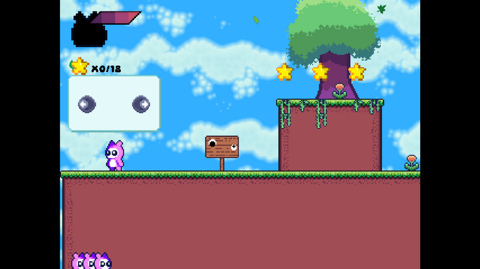
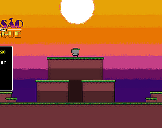
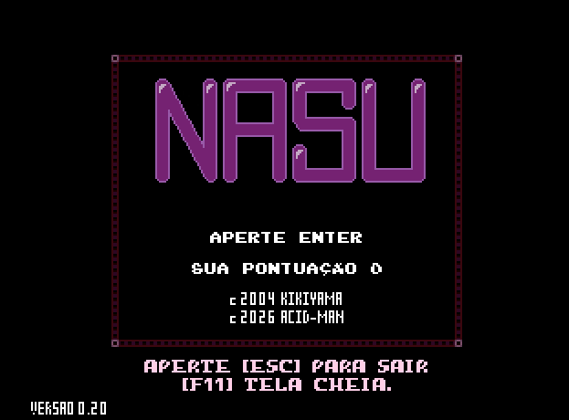
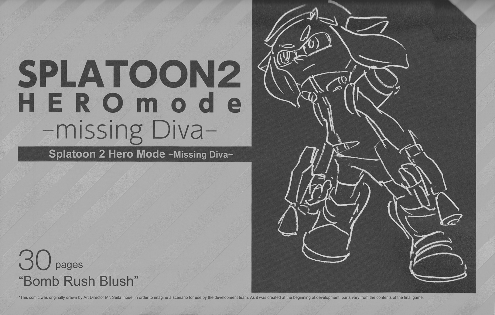
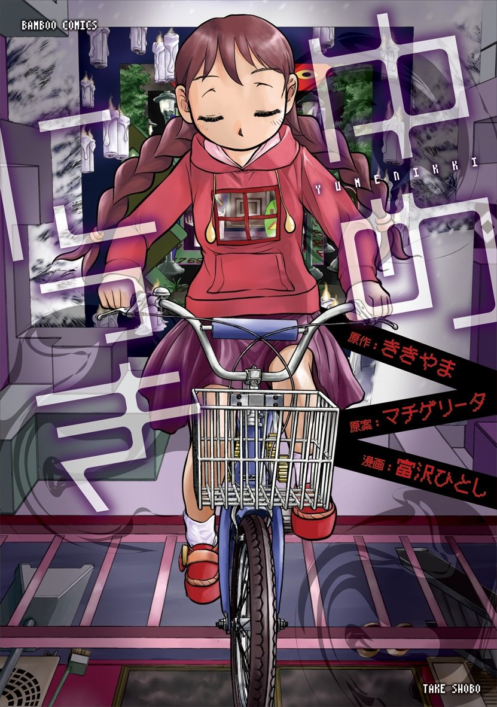
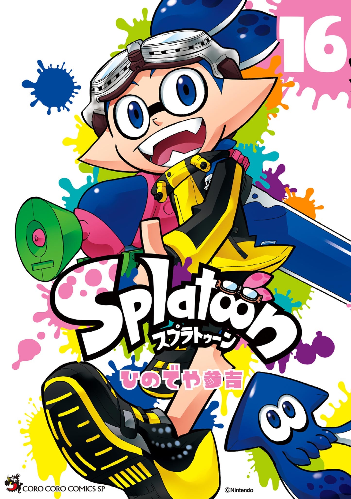

Plushie Adventure
Plushie Adventure se trata de um plataformer arcade, onde você joga com o protagonista Plushie, um ursinho de pelúcia que procura libertar sua terra do terrível pesadelo que a assola.
- Jogo
- TechDemo
- Windows

Plushie Adventure se trata de um plataformer arcade, onde você joga com o protagonista Plushie, um ursinho de pelúcia que procura libertar sua terra do terrível pesadelo que a assola.

Prepare-se para mergulhar em uma emocionante aventura com Zé Gotinha, o herói da saúde pública, em uma missão urgente para salvar a cidade da terrível invasão do mosquito da dengue!

Este é uma recriação standalone do minigame NASU do jogo ゆめにっき (Yume Nikki), feita no Gamemaker como um projeto de um dia.

“Dr. Robotnik’s Ring Racers” is a Technical Kart Racer, drawing inspiration from “antigrav” racers, fighting games, and traditional-style kart racing.

Quadrinho conceitual oficial para o Modo Herói de Splatoon 2. Originalmente publicado em HaikaraWalker / Inkopolis Walker.

Adaptação oficial em mangá do jogo de RPG Maker, Yume Nikki. Madotsuki é uma garota que sempre sonha com a mesma paisagem. Finalmente, ela decide começar a explorar seus sonhos em busca de respostas.

Uma série do popular jogo Splatoon com personagens originais do mangá, apresentando as peripécias da Equipe Azul e, mais especificamente, de Goggles.